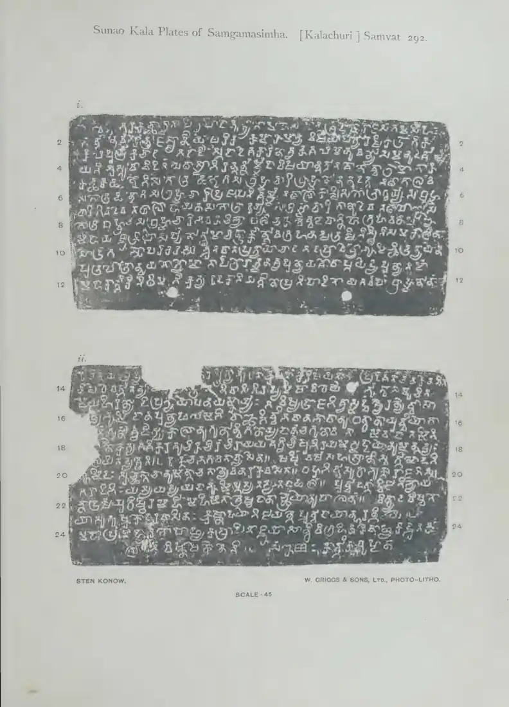
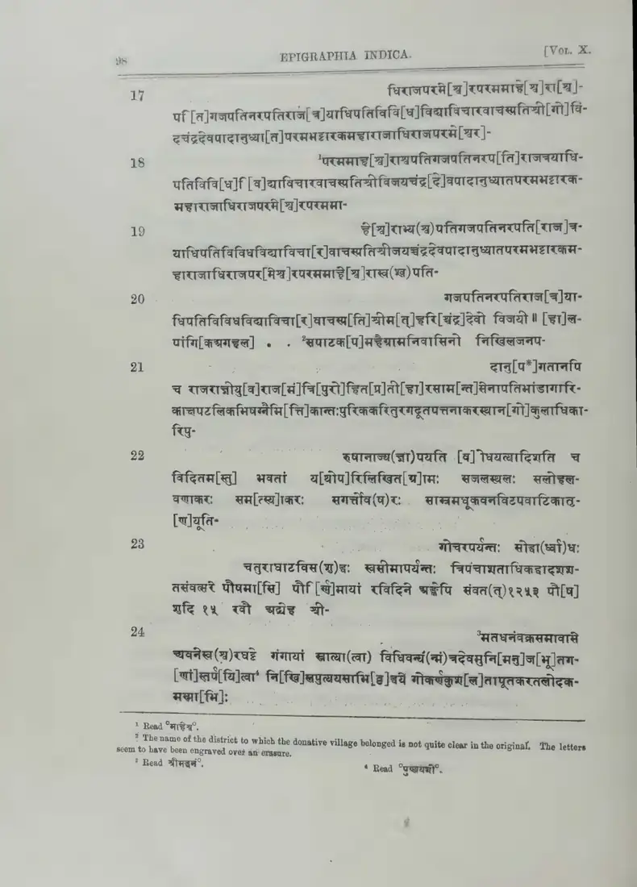
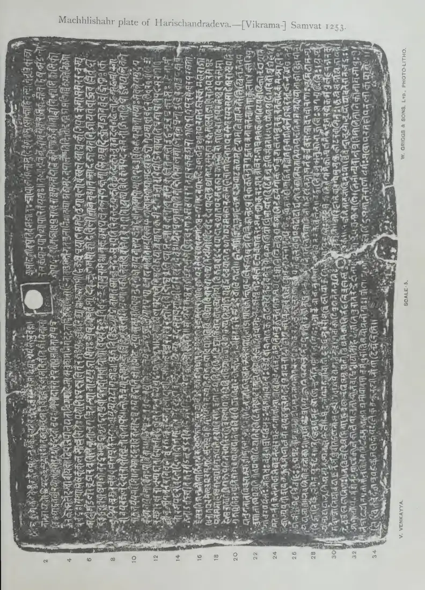

Machhlīṣhahr plate of Hariśchandradēva
MACHHLISHAHR COPPER-PLATE OF HARISCHANDRADEVA OF
KANAUJ; [VIKRAMA-]SAMVAT 1253.
BY PANDIT HIRANANDA, M.A.; LAHORE.
This is a single plate, which measures 13" wide by 18" long, and was found together with the seal " in village Kōtwa, parganah Ghiswā, tahsil Machhlishahr, on the cast side of the unmetalled road running from Machhlishahr to Janghai," when excavations were carried on as famine relief work in the Jaunpur District of the United Provinces. In January last, Mr. C. A. C. Streatfield, I.C.S., presented it to the Provincial Museum at Lucknow, where it is now deposited. The Curator of the Museum informs me that he received it " in a bent and twisted condition in consequence of which it had to be flattened." It is broken about the middle and the writing which it bears is also considerably damaged.
The inscription which is engraved only on one side of the plate comprises 34 lines written in the Sanskrit language and the Nāgarī script. The size of the letters is between " and ". As regards orthography, it is enough to state that no distinction is made between the sigus for b and v and that the dental and palatal sibilants are used indiscriminately.
The epigraph opens with 16 verses, the first 14 of which it has in common with the grants of Jayachchandradēva published in this Journal1 and in the Indian Antiquary.2 Towards the end, the subjoined inscription has 12 benedictive and imprecatory verses that are generally met with in other epigraphs. Verses 15 and 16 eulogize Hariśchandradēva, who “spread his unequalled fame spotless in the world” and who “eclipsed the splendour of the sun by means of the dust that was raised by the hoofs of his endless horses which pervaded the circle of the earth and gradually encompassed the sky.” The formal part of the grant, from line 20 to line 27, is in prose and is worded like the corresponding parts of the other Gahađavāla grants that have already been published.
The inscription records that the Paramabhaṭṭaraka Mahārājādhirāja Paramēśvara the glorious Hariśchandradēva (the successor of the P. M. P. Jayachchandradēva), while residing at Dhanamvakra (?) (l. 24), granted, after having bathed in the Ganges at the bathing ghāṭ named Chyavanēśvara, the village of Pamahai (l. 20) together with its outlying hamlets (pāṭaka) to one Rāhihiyaka (?)3 (l. 25), son of the ṭhakkura Madanū of the Kāśyapa-gōtra, on Sunday, the 15th tithi of the bright half of the month Pausha in [Vikrama-]Samvat 1253. The charter was written by the Mahākshapaṭalika, the ṭhakkura Bhōgāditya.
The seal accompanying the plate is circular and about 27/8" in diameter. The ring on which it is soldered is open. Owing to this circumstance the seal can be taken off or passed through the hole cut at the top for this purpose. The seal bears in relief a Garuđa and a conch and between these the legend: Śrīmata-Hariśchandradēvasya.
The record possesses some historical importance, for, to the list of the kings of Kanauj it adds one new name, viz. that of Hariśchandra. Indeed, we knew Hariśchandra as the son of Jayachchandra from the latter's grants published in the Indian Antiquary (Vol. XVIII. p. 130 ff.) and the Epigraphia Indica (Vol. IV. p. 126 f.). But Hariśchandra as a ruling chief of Kanauj is mentioned only in the subjoined record.
The date regularly corresponds, for the Vikrama year 1253 expired (1254 current), to Sunday, the 6th January A.D. 1197, when the full-moon tithi of Pausha ended 22 h. 58 m. (approximately) after mean sunrise.
Of the localities4 mentioned in the record, the name of one can be read with certainty and it is Pamahai, the village that was granted. Pamahai is merely a feminine of Pamahā, as Khairai is of Khairā, Pendrai of Pendrā, Burbi of Burbā, and so on. It is usual to name a small village near a bigger one in the feminine as a diminutive form and such villages are usually found side by side. Under these circumstances it will not be unreasonable to suppose that Pamahai stood somewhere near Pamahā.5 The latter I am inclined to identify with Pohā, a village about 2 miles from the spot where the document was found. That Pamahā should dwindle to Pohā is not extraordinary, as the dropping of the nasal is not uncommon in Hindi. The reading of the names of other localities is not certain and I am unable to identify them.
[One of the Kamauli plates belonging to the reign of Jayachchandra (T.), dated in Vikrama-Samvat 1232, records a gift made by the king at Kāśi (Benares) on the occasion of the
1 Above, Vol. IV. pp. 120-9.
Vol. XV. p. 10 f. and Vol. XVIII. pp. 129-43.
3 It is also possible that the donee's name is Hihiyaka and that the syllable rā is an abbreviation of the title rāvuta or rāūta. In the Faizābād plate of Jayachchandra, for instance, the donee, who was a Brāhmana of the Bhāradvāja-gōtra, his father and grandfather bore the title rāūta (Ind. Ant. Vol. XV. p. 13).
4 [A grant of Gōvindachandra found in a hamlet near Machhlīshahr has been published by the late Prof. Kielhorn (above Vol. V. p. 115). It is also deposited in the Lucknow Museum. It is dated in Vikrama-Samvat 1201 corresponding to A.D. 1146. The village granted by this record is Pcrōha in the Mahasōya-pattalā.—Ed.]
5 Mr. Hiralal of the Gazetteer Office, Nagpur, who has supplied the information regarding these names similar to our Pamahai, would identify Pamahā with Bambāhā, a village in the Machhlīshahr tahsil.
jātakarman (i.e. birth ceremony, when the navel-string is divided) of his son Harischandradēva. The date of the inscription corresponds to the 10th August A.D. 1175. Apparently, this was the day on which Harischandra was born. His nāmakaraṇa (i.e. giving a name) is referred to as having taken place just three weeks later on the 31st August 1175 A.D.2 Accordingly, Harischandradēva must have been 21 years old at the time of the subjoined inscription. As the latest known date of Jayachchandra is A.D. 1187,3 the accession of his son Harischandra must have taken place between A.D. 1187 and 1197, the date of the present grant.
The town of Kanauj was completely devastated by Shihāb-ud-din in A.D. 1193 and it is not a little surprising that Harischandra is described in the subjoined record as if he were a para-mount sovereign. The Belkharā pillar inscription, dated a few months earlier,4 does not mention Harischandra but represents an un-named king of the Gahaḍavāla family as granting a village more than two hundred miles distant from Kanauj. The connection of this king as well as of Harischandra with Kanauj was perhaps only nominal. The former was probably residing at some town out of the reach of the Muhammadan generals or officials. Mr. V. A. Smith thinks that the king's residence was near Jaunpur.5 Zafarābād, 4 miles to the south-east of that city, is said to have been the site of a palace of the later rulers of Kanauj.—Ed.]
TEXT.6
1 श्री7 अकुंठोत्कंठवैकुंठकंठपीठलुठत्करः ।
[संरं]भ[: सु]र[तारं]भे स [श्रि]यः श्रेयसेस्तु वः ॥ [१*]
आसीदशी[त]द्युतिवंस(श)जातः-8
क्ष्मापालमालासु दिवं गतासु ।
सा[क्षा]द्विवस्वानि[व*] भूरिधा[म्ना]
2 नाम्ना यासो9[वि]ग्रह इत्युदारः ॥ [२*]
त[त्सु]तोभूम्बहीचंद्र[:] चंद्रधामनिभं निजं ।
येनापारमकूपारपारे व्यापारितं यशः ॥ [३*]
तस्याभूत्तनयो नयैकरसिक[:*] क्रांतद्विषय्यंडलो
3 वि[ध्वस्तो]इतवोरयोधतिमिरः श्रीचंद्रदेवो नृपः ।
घेनोदारतरप्रतापस(श)मिताशेषप्रजोप[द्र]वं
श्रीमद्गाधिपुराधिराज्यमसमं दोर्व्विक्रमेणार्जितं ॥ [8*]
तीर्थानि 10कासिकुसिकी-
1 Above, Vol. IV. p. 126.
2 Ind. Ant. Vol. XVIII. p. 129.
3 Ibid. Vol. XV. p. 13 and above, Vol. V. Appendix No. 181. The Sanskrit poet Śrī-Harsha, author of the Naishadhīyacharita, is believed to have flourished in the 12th century A.D. The last extant verso of this poem shows that the poet was highly honoured by the ruler of Kānyakubja (tāmbūladvayam=āsanam cha labhatē yah Kānyakubjēśvarāt) who, according to tradition, was Jayantachandra, i.e. Jayachchandra. If this tradition be correct, it would show that the poet flourished about the fourth quarter of the 12th century A.D.
4 Cunningham's Archæological Survey Reports, Vol. XI. p. 129.
5 J. R. A. S., July 1908, p. 792.
6 The wording of this record is almost identical with that of the grants of Jayachchandradēva which have been translated. I, therefore, deem it superfluous to give its translation.
7 Expressed by a symbol.
8 Cancel the visarga.
9 Read यशो.
10 Read काशिकुशि.
स्था[नी]यकानि परिपालयताधिगम्य ।
हेमात्मतुल्यमनिशं ददता द्विजे[भ्यो]
ये[न]ांकिता वसुम[ती] शत[श*]स्तुलाभिः ॥ [५*]
तस्यात्मजो मदनपाल इति क्षितै[द्र]-
श्रू(चू)डामणिर्विजयते निजगो-
यस्याभिषेककलसो(शो)ल्लसितैः पयोभिः
प्रक्षालितं [कलि*]रजः पटलं धरित्याः ॥ [६*]
यस्यासोद्विजयप्रयाणसमये तुंगाचलोच्चैश्वल-
न्माद्यत्कुंभिपदक्रमासमभरभस्य(श्य)-
चूडारत्नविभिन्नतालुगलितस्त्यानाशृ(सृ)गुद्भासितः
शेषः पेषवसा(शा)दिव क्षणे(ण)मसौ क्रोडे विलीनाननः ॥ [७*]
तस्मादजायत निजायतवाहुवल्लिवद्धा(बन्धा)-
[सां]द्रामृतद्रवमुचां प्रभवो गवां
यी गोविंदचंद्र इति चंद्र इवाम्बुरासे(शे)ः ॥ [८*]
न क[थ]मप्यलभन्त रणक्षमांस्तिष्टषु दिक्षु गजामथ वज्रिणः ।
क-
कुभि पस्र(बभ्र)मुरभ्रमुवल्लभप्रतिभटा [इव] यस्य य(घ)टागजाः ॥ [९*]
अजनि विजयचंद्रो नाम तस्मान्नरे(रे)द्रः
सुरपतिरिव भ(भू)भृत्पक्षवि[च्छे]ददक्ष[:*] ।
भुवनदलनहेलाहर्म्म(स्यं)हस्वी(म्मी)रना-
नय[न]जलदधाराधौतभूलोकतापः ॥ [१०*]
लोकत्रयाक्रमणकेलिविग्रृंखलानि
[प्रस्था]तकीर्त्तिकविवर्णितवैभवानि ।
यस्य त्रिविक्रमपदक्रमभांजि भान्ति
प्रो[ज्जृं]भथ [न्ति] वल्लि-
Plate 1 is bound after this page.
तस्मादद्भुतविक्रमादथ जयचंद्राभिधानः पति-
र्भूपानामवतीर्ण्णं एष भुवनो[द्व]ा[र]ाय नारायणः ।
दैधीभावमपास्य विग्रहरुचिं धिक्क(क्रृ)त्य सा(शा)न्तास(श)याः
सेवन्ते यमुदग्र-
वन्धनभयध्वंसार्थिनः पार्थिवाः ॥[१२*]
ग[च्छे]न्मू[च्छीम]तु[च्छां] न य[दि क]वलयेत्कू[र्म]पृष्ठाभिघात-
प्रत्यावृत्तं(त्त)श्रमार्त्तो नमदखिलफणास्वाम(श्रास)वात्यासह[श्र](स्र) ।
उद्योगे यस्य धावद्वरणिधरधुनीनिर्भ-
रस्फारधारा-
भस्य(श्य)हानद्विपालीवहुलभरगलद्वैर्यनु(म)द्रः फणीन्द्रः ॥ [१३*]
[यस्मिं]श्वलत्युदधिनेमिमहीजया[र्थ]
माद्यत्करीन्द्र[गु]रुभार[नि]पीडितेव ।
याति प्रजापतिपदं स(श)रणाघि(र्थि)-
13नी भू-
[स्खं]गत्तुरं[ग]निवहीत्यरजश्छ[लेन] ॥[१४*]
तस्मादाशी(सी)दसीमल्वरतुरगखुरचोदविचि[म]धूलि-
व्याप्त[क्ष्मा]चक्रवालक्रमकलितनभोरुद्धस्रप्रकास(श)ः ।
सेनासं-
भारसंपद्दर[वि]दलदिला दो ० माना [नरे]द्र-
श्व[द्राकं]—स्स ० — यि स्फुरदसम[य]शाः श्रीहरिश्वंद्रदेवः ॥ [१५*]
येन प्रणा(भा)[स]पतिन(ना)१ क्षितिपालमौलि-
रत्नप्रभारुचिरचारुपदां[वु]-
जेन ।
२उ[इं]डशीतकरमंडलपुंडरीक-
[डिं]डीरपि[डमिव शुभ्रय]सो(शो) वितेने ॥ [१६*]
सोयं सम[स्त]राजच[क्रसं]सेवितचरणः स च परमभट्टारकम[ह]ाराजाधिरा-
जपरमेस्व(श्व)रपरममा-
हेस्व(श्र)रनिजभुजी-
पार्जित[श्री]कन्यकु[न]ाधिप[त्य]श्रीचंद्रदेवपा[द]ानुध्यातपरमभट्टारकमहाराजा-
धिराजपरमेस्व(श्व)रप[र]ममाहेस्व(श्र)[र]श्रीमद[न]पालदेव[पा]दानुध्यातपरम-
भट्टारकमहाराजा-
१ [Perhaps the reading intended is प्रणामपतित°.—Ed.]
२ Read उद्दृष्°.
Plate 2 is bound after this page.
Plate 3 is bound after this page.
ठक्कुरसोपालपौचाय ठक्कुरमदनूपुचाय रा[ही]ही[य]काय आचंद्रा-
र्षं या[वच्छा]सनीकृत्य पि[तृ]पितामहोपार्जित तथा महारागी(न्नी)-
संनंडारीरतन्दकेन ? संप्रति[गु]-
प्रदत्तो मत्वा यथादीयमानभागभोगकरप्रवणिकरजलकरलवणाक[र]प[र्ण]-
कर . . . . . 2 नियतानियतप्रभृतिसमस्तादा[या]नाज्ञा-
विधेयीभू-
भूमिं यः प्रतिगृ[ह्ण]ति [य]श्च भूमिं [प्र]य[च्छ]ति ।
[उ]भौ तौ पुन्य(ख)क[र्माणौ] नियतं स्वर्ग[ग]ामिनौ ॥ [१७*]
सं(श)खं भ[द्रा]सनं कृत्रं वरास्वा(श्वा) वरवारणाः [1*]
भूमिदाम(न)स्य
षष्टि(ष्टि) वर्षसहश्चा(स्रा)णि [स्वर्गे] ति[ष्ठ]ति भूमिदः ।
आ[च्छे]त्ता चानु[मंता च ता]न्वे(न्ये)व नरके वसेत(त्) ॥ [१९*]
वह्निभिर्वसुधा भुक्ता राज[भि]ः सगरादिभिः ।
यस्य
स्वदत्तां प[र]दत्तां वा यो *हरेद्व[सु]धरां [1*]
स वि[ष्ठ]ायां कृमि[भूत्वा] पितृभिः सह मज्जति ॥ [२१*]
गामेकां स्वर्णमे[कं] [वा*] भूम(मे)र[प्थे]कमंगुलं [1*]
हरन्नरक-
तडाग(गा)नां सहस्रेण वाजपेयशतेन च ।
गवां कोटिप्रदानेन भूमि[हर्त्ता न] सु(श)[ध्य]ति ॥ [२३*]
वारिही[ने]व्य(ष्व)रख्येषु सु(श)ष्ककोटरवासिनः ।
क्वस्त्र(ण)सर्पाश्च जायन्ते
1 This would show that the village of Pamahai formed part of the estate of some queen of Jayachchandra who, being issueless, gave up her rights to Harischandra. [Perhaps the writer intended to engrave [तक्]महारागामं मंडारीरतन्दकेन संप्रति [गु]डानीकृत्य—Ed.]
2 The fiscal terms which seem to be mentioned in this gap occur nowhere else, so far as I have been able to ascertain. The reading appears to be दा (or perhaps दी)गपसदीदीर्घगोवि[कृ]।
3 Read हरेत व.०
31 <|875|><|112|> देवव्रह्न[स्व*]हारिणः ॥ [२४*]
न विषं विषमित्या[हु]व्रंहा(ह्न)सं विषमुच्यते ।
विषमेकाकिनं हन्ति 'व्रहासं [पुत्रपौत्र]कं ॥ [२५*]
सर्व्वानेतान् भाविनः पार्थिवेन्द्रा[न*]
भूयो भूयो याचते रान(म)[भ]द्रः ।
32 <|324|> सा[मा]न्योयं 2धर्मसेतुंनृपाणां
काले काले पालनीयो भवद्वि(ङ्गि)ः ॥ [२६*]
यानीह दत्तानि पुरा नरेन्द्रैर्दाना[नि धर्मार्थ]यशस्क्राणि ।
निर्मा[ल्ब]वान्तप्रतिमानि तानि को नाम साधुः पु-
नराददीत ॥ [२७*]
33 <|332|> वाताभ्रवि[भ्रम]मिदं वसु[धा]धिपत्य-
मापातमात्रमधुरा विषयोपभोगाः ।
प्राणा[स्तृ]णा[ग्रज]लविन्दुसमा नराणां
धर्मः सखा परमहो परला(लो)क[या]ने ॥ [२८*]
34 <|332|> लिखितं चेदं [त]ामपट्टकं महाक्षपट-
लिकठक्कुरश्रीभोगादित्यैरिति ॥
2 Read °सेतुन्द्रंपाणां.


